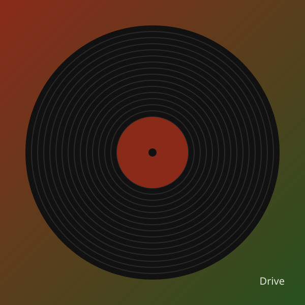

"Sì, vendetta" alternates: Galvany & Ruffo; Battistini & Hayes

Why it's here: same revenge duet as GM-IT-002; useful if the preferred Barrientos & Stracciari (Columbia 78363, 1919) transfer cannot be obtained.
Music made where it wasn't wanted, and songs that kept the score.

Why it's here: same revenge duet as GM-IT-002; useful if the preferred Barrientos & Stracciari (Columbia 78363, 1919) transfer cannot be obtained.